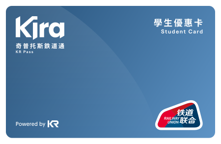

<style>

</style>

<section class="hero-wrapper">
    <div class="hero-bg">
        <h2 style="font-size:5em;font-weight: 400;color:rgba(255, 255, 255, 0.8);letter-spacing: 0.2ch;"><b>搭乘</b> 奇普托斯铁道</h2>
        <h2 style="font-weight: 400;color:rgba(255, 255, 255, 0.6);letter-spacing: 0.2ch;">Using Kivotos Railway</h2>
        <div class="arrowWrap"><div class="arrow"></div></div>
    </div>
</section>
<section class="main">
    <div id="line-map" class="line-map">
        <div class="info-title">            
            <h2>线网地图</h2>
            <span class="translation">Line Map</span>
        </div>
    </div>
    <div id="ticket-guide" class="ticket-info">
        <div class="info-title">            
            <h2>购票指南</h2>
            <span class="translation">Ticket Guide</span>
        </div>
    </div>
    <div id="transit-card" class="suica-info">
        <div class="info-title">            
            <h2>储值卡</h2>
            <span class="translation">Transit Card</span>
        </div>
        <p>想要体验无现金生活？在KR运营区域，您可以获取和使用物理或NFC样式的储值交通卡「Kira」。</p>
         
        <p>您可以使用「Kira」乘坐KR及合作伙伴运营的公交汽车，地铁，单轨等交通服务，还可用其在「天使24」便利店等场所消费。</p>
    </div>
</section>
